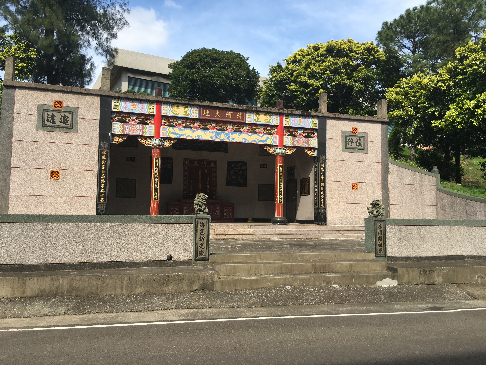
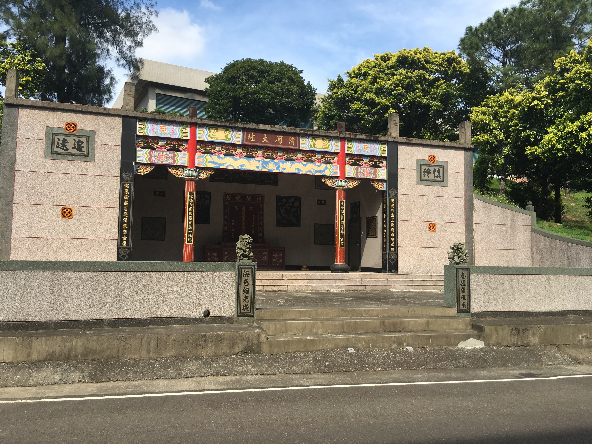
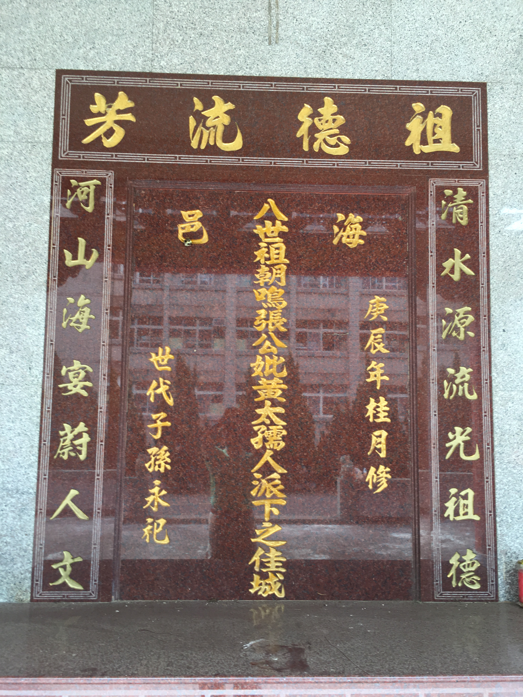
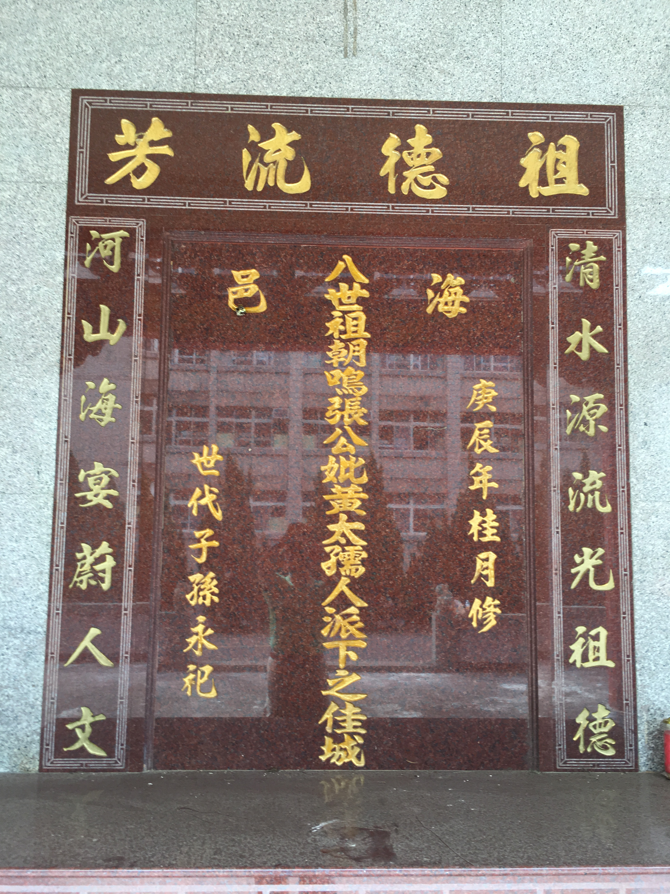
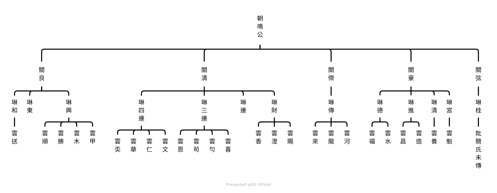

朝鳴公派下遷徙史略
清河堂先祖八世朝鳴張公妣黃太孺人係由廣東省海豐縣公平鄉箣竹兜隨兄渡臺，定居新竹縣湖口鄉長嶺村，開基創業，耕讀傳家，以求餬口，生下五男，長男關弦、次子關豪、三男關傑、四男關清、五男關良，均有成家立業，唯有長男關弦公行方失散，無處追根，遺留四大房，後裔繁衍，人丁旺盛，散居全省，各有成就，大業宏昌，緬懷先祖，慎終追遠，孝悌傳家。原有祖骸各處瑩葬，無法集中，昔日幸本祖塔原有地主蘭勇公、蘭發公所有土地，係茶園林地可耕作，前面有縣道暢通，為後裔著想，犧牲奉獻自動捐出約二百八十坪供建祖塔。祖塔內座向癸山兼子坐女宿八度丁丑水度平分乙丑分金穿山壬子透地乙未山運戊辰龍運辛未運鶴尾財帛壽星房大火田宅折木人丁星紀茲登小雪後太陽寒水司令為旺氣迎祥，富麗堂皇，山明水秀，可謂地靈人傑也。祖塔建於民國三十七年(西元1948)，歲次戊子，以德喜公為主事，蘭發公、桂祥公、桂泉公為發起人，創建祖塔經過眾房協議同意籌備經費，即請地理師勘地吉穴，擇取同年十二月初八日吉時破土興工，癸山兼子吉度分金。昔日，經濟拮据以義務工方式，在附近或河川採取石材打成石條人工搬運，經過羊腸小徑集中建築地，耗費年餘以石條砌成拱窯式創造，告竣可容納貳佰餘位骨骸，於次年十月十一日告竣。同時恭請祖骸登位安龍謝土，啟建三獻道場。祖骸登塔計五十五位。祖塔曾於二次開塔添金吉度分金山運庚辰房族代表丁丑生修建圍牆，於民國五十四年歲次乙巳八月十三日添金登位，計二十九位，同時三獻禳龍。其中第三次開塔添金無編號次序未詳，請待查。第四次登塔添金於民國七十二年歲次癸亥十月十一日登位，計九位，同時三獻禳龍。第五次登塔添金於民國八十年歲次辛未十二月十二日登位，計十七位，同時三獻禳龍。以上塔內實登位一百二十一位。 建後二十年，附近土地及茶園被國防部徵收為裝甲兵學校指揮部之用，現址墓園貳佰捌拾坪則續保留，奈因年久墓園逐漸老舊，且內部狹窄，展望未來即將無法容納，民國86年(西元1997年)經第五屆管理委員會提議改建祖塔，並邀集眾房召開祖塔改建會議，獲得眾房一致同意改建祖塔共識。於民國八十七年(西元1998年)四月五日清明祭墓之時公布祖塔改建事宜，並成立祖塔改建委員會，依祖塔改建委員會決議，以現有男丁每人收取新臺幣壹萬陸仟元為改建經費，經改建委員會積極籌畫，並聘請著名中壢地理師張煒安實地勘察，擇取民國八十八年(西元1999)歲次己卯十月十六日卯時拆卸破土原地整建，依原山向癸山兼子午配用丙子丙午分金，改用鋼筋水泥，改建二層樓階梯式納骨塔，可容納貳仟餘骨墰，於民國八十九年(西元2000)庚辰八月十九日竣工，卯時覆進祖骸登位，同時安龍謝土。啟建道場三獻禳龍，先祖安居，後裔昌隆，並建立認捐及樂捐名冊，做為入塔審查依據，惟牌樓未有完竣，目前與軍方協調中。第五屆管理委員會主任委員 桂財
改建委員會發起人 桂土 桂清 紹營 紹錦
財務管理人 桂樓
中華民國一○二年歲次癸巳桂月吉旦
朝鳴公派下祖塔照片
 

 

朝鳴張公派下管理委員會組織章程
中華民國91年四月五日訂定
中華民國100年四月五日修定
中華民國104年十月二十五日修定
朝鳴張公派下管理委員會組織章程
第壹章 總則：
第一條：本會定名為「朝鳴張公派下管理委員會」。
第二條：本會成立於一九八四年（中華民國七十三年）四月五日清明節。
第三條：本會成立宗旨：
先祖朝鳴公與兄長朝欽、朝讚公於乾隆八年歲次癸亥（一七四三）十一月二十一日來台，蕃衍昌盛壯大，慎終追遠先祖德澤之餘，為承先啟後繼往開來，並維繫宗族源遠流長，敦親睦族與強化宗族凝聚力暨處理宗族各項事宜，而成立本會。
第貳章 任務
第四條：本會之任務如下
１、議決與執行委員會議各項議案。
２、祖塔與設備及先祖靈骸之管理維護。
３、清明祭祖事宜之聯絡與安排。
４、清明祭祖餐點茶水之安排。
５、祖塔管理費用之收取、樂捐與管理及財務收支報告。
６、祖塔永久基金之管理及財務收支報告。
７、祖塔開塔進骨骸各項事宜準備與安排。
８、派下員慶、弔、重大急難救助事宜之處理。
９、派下各項資料之建立、保存與移交。
10、朝欽、朝讚、朝鳴公三大房派下聯繫工作與聯誼會之籌辦。
11、其它。
第叁章 組織及職權
第五條：本委員會之產生，以蘭字輩為基準，各房選出一位委員，人口眾多者可增加若干委員，共組委員會，執行本章程之各項任務，任期三年，自國曆四月接任起至任滿三年之四月卸任止，全體委員為無給職，委員退任時，優先由蘭字輩派下自行推薦，次為由委員會推薦之。
第六條：委員會於任期屆滿當年國曆三月由主任委員召開委員會議，共同推薦下一任主任委員，並於清明祭祖宗族大會宣佈通過後確立，或於四月五日清明祭祖大會以戶為單位投票選舉下一任主任委員，清明祭祖後當月（四月），由卸任主任委員擇日召開委員會議辦理移交工作，前一任主任委員（常務監事）擔任監交人。
第七條：主任委員任期三年，連選得連任，為無給職，對內綜理會務，對外代表本會，並聘請當屆委員及擔任委員會主席，主任委員因故不能執行職務時，由總幹事代理之，若任期超過一年，二個月內由總幹事召開委員會推選代理主任委員。
第八條：主任委員可聘請總幹事一名總理各項事務，財務一名管理帳務，執行秘書一名負責文書處理，任期同主任委員，皆為無給職。
第九條：本會由卸任之歷任主任委員共同推薦（需有半數以上前主任委員出席，以出席人數過半數同意行之）一位前主任委員擔任委員會常務監事，負責指導與監督委員會運作，並審查管理經費與永久基金收支帳務， 亦為無給職。
第肆章 會議
第十條：每年清明祭祖視同召開朝鳴張公派下後裔宗族大會，為最高權力機構，平日由委員會代理職務。
第十一條：主任委員得視需要不定期召開委員會議，一年至少召開一次。
第十二條：若有需議決事項，需有半數以上委員出席，以出席人數過半數之同意行之。
第伍章 祖塔管理
第十三條：朝鳴公派下祖塔建造於民國三十七年（一九四八年）農曆十二月初八日，次年十月十一日進金登位完塔竣工，並於民國八十八年（一九九九年）農曆十月十六日改建，次年八月十九日進金登位完塔竣工。
第十四條：「祖塔管理細則」由委員會訂定審議後交清明祭祖宗族大會公告後實施之，修訂時亦同；委員會依「祖塔管理細則」管理祖塔。
第陸章 經費
第十五條：本會管理經費來源：
１、每年清明祭祖時，每付祭品收取祭祖香金及點心費用，收取金額由委員會議定。
２、每年清明祭祖時接受宗族自由樂捐。
３、其他收入。
第十六條：本會管理經費支出原則如左：
１、所有會務及祭祖開支收據均需經總幹事及主任委員簽名認可。
２、派下後裔五年之內有樂捐記錄者，若有不幸治喪時，以主任委員及總幹事之名製作花圈祭品治喪，費用以新台幣三千元為上限。
３、有傑出後裔當選地方首長、民意代表，及其他傑出之表現者，經管理委員會審議通過，得以主任委員及總幹事與全體委員之名義製作匾額致賀，費用以新台幣八千元為上限。
４、派下後裔家中有重大急難事件，經管理委員會通過補助救濟，得以主任委員及總幹事代表委員會致贈救助金，費用以新台幣貳萬元為上限。
第十七條：本章程若有未盡事宜，由委員會修訂，提經清明祭祖宗族大會公告通過後實施。
朝鳴張公派下祖塔管理細則
中華民國91年四月五日訂定
中華民國100年四月五日修定
中華民國104年十月二十五日修定
第一條：本細則依朝鳴張公派下管理委員會組織章程第十三條規定訂定之。
第二條：祖塔祭祖定於每年清明節上午九時至十二時。
第三條：祖塔內外鑰匙擇六人保管，保管人名冊登入管理委員會。
第四條：祖塔門鎖需經管理委員會主任委員及總幹事認可才得開啟。
第五條：除下列人員外，朝鳴公派下（關豪公、關傑公、關清公、關良公）後裔骨骸皆得依第六、第七條規定入祖塔登位安奉。
１、女裔未婚生子，其子兒屬張家系統者可入祖塔安奉，但其本身不得進入。
２、女人與張家結婚生子中途離異者不得入塔安奉，若其子兒賴其監護而無改姓，子兒可入祖塔安奉。
３、若有招贅者，夫妻歸屬男家，兒子得依姓氏歸屬。
第六條：一九九九年祖塔重建依規定認捐之後裔子孫入塔免繳費。
第七條：一九九九年祖塔重建未認捐之後裔子孫每丁入塔金額依當時委員會規定（二○○二年委員會通過訂定每丁貳萬陸仟元整），並繳清費用後才得入塔登位。
第八條：欲入祖塔之骨骸於每年國曆三月五日前向管理委員會主任委員或總幹事填表登記申請，管理委員會必須召開委員會依本細則第六、第七條之資格逐一審核之。
第九條：火化及檢骨後得依第六、第七條規定向管理委員會申請暫寄旁倉，辭世滿三年才得入祖塔登位安奉，登位安奉時日定為每年清明節日，若次年清明節登位安奉時日與其年房不合，可以自請地理師擇日進金。
第十條：欲從祖塔請出骨骸另奉，需經管理委員會議裁示核定。
第十一條：一九九九年祖塔重建結餘款另成立永久基金，專用於祖塔修繕營建，基金獨立作帳，不得與委員會管理費混合使用，本基金由二人共同管理，保管人名冊登入管理委員會，動用本基金需經管理委員會議通過。
第十二條：第七條入塔費用必須併入永久基金管理使用。
第十三條：祖塔管理有其他特殊情事得依管理委員會議之決議辦理。
第十四條：女裔出嫁後及與張家中途離異之女士請勿至祖塔焚香。
第十五條：本細則自清明祭祖宗族大會公告通過後實施，修訂時亦同。
朝鳴張公派下祖塔管理委員會歷屆主委名冊
於民國74年(西元1985年)4月5日成立此管理委員會，每一任期三年。
| 第一屆 |
張貴清 |
整修舊祖塔牌樓 |
74-76 |
|---|---|---|---|
| 第二屆 |
張紹營 |
首倡以辦桌方式提供親族清明祭祖時飲食 |
77-79 |
| 第三屆 |
張少尉 |
發起渡臺祖三大房聯誼大會聚餐聯誼 |
80-82 |
| 第四屆 |
張紹棟 |
渡臺祖三大房聯合商議樂捐籌資編撰族譜並免費贈送親族 |
83-85 |
| 第五屆 |
張貴財 |
籌備祖塔興工改建並購置桌椅、金爐 |
86-90 |
| 第六屆 |
張貴藏 |
訂定管理規章、細則及清明祭祖牲禮收費以健全財務 |
91-92 |
| 第七屆 |
張紹龍 |
栽植祖塔松柏及環境美化 |
93-95 |
| 第八屆 |
張紹瑞 |
有效管理入塔申請表格 |
96-98 |
| 第九屆 |
張紹郎 |
籌辦三大房聯誼會、環境維護改以志工方式凝聚親族向心力 |
99-101 |
| 第十屆 |
張紹郎 |
重建親族通訊錄、編修三大房族譜及各式規章、資料數位化 |
102-104 |
| 第十一屆 |
|
|
|
| 第十二屆 |
|
|
|
| 第十三屆 |
|
|
|
| 第十四屆 |
|
|
|
| 第十五屆 |
|
|
|
| 第十六屆 |
|
|
|
| 第十七屆 |
|
|
|
| 第十八屆 |
|
|
|
| 第十九屆 |
|
|
|
| 第二十屆 |
|
|
|
| 第二一屆 |
|
|
|
| 第二二屆 |
|
|
|
朝鳴公派下主系統表
